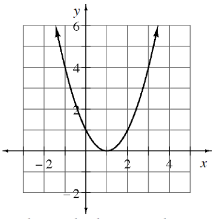

.figure-full image option. Homework Help text omitted. Figure filenames now use hyphens. Code comments included for easier editing. For each angle, sketch its position in a unit a circle and determine the coordinates of the corresponding point on the unit circle.
\(θ=\frac{2\pi}{3}\)
\(θ=\frac{7\pi}{4}\)
\(θ=\frac{7\pi}{6}\)
\(θ=\frac{5\pi}{4}\)
Sketch each of the following angles in a unit circle. Then state the coordinates of the corresponding point on the unit circle.
\(θ=\frac{5\pi}{3}\)
\(θ=-\frac{5\pi}{4}\)
\(θ=\frac{8\pi}{3}\)
Given the graph of \(y=f(x)\) below, sketch the graph for each of the following transformations.
Continuous piecewise graph with following 3 linear pieces: From left, horizontal), turning at the point (negative 3, comma 3), falling to the point (1, comma negative 1), rising up & right, passing through the point (4, comma 2).
\(y=2f(x)\)
\(y=f(2x)\)
\(y=-f(x)\)
\(y=f(-x)\)
Using the graph, where is the function increasing/decreasing? Where is the function concave up/down? Does this function have any maxima or minima? Explain how you know.

Algebraically solve each system of equations and state the method you used. Graphically check your answers.
\(y=2x+1\)
\(2x-2y=-11\)
\(\frac{1}{3}x+\frac{2}{3}y=5\)
\(5x-2y=15\)
Use the properties of exponents to simplify \(\left(\frac{12f^{-3}g^6}{3f^{-9}}\right)^2\)
Ling set a goal to ride her unicycle one mile, or \(5280\) feet, per day. Her unicycle tire has a diameter of \(20\) inches. How many revolutions will she need to pedal each day to meet her daily goal?
A circle is centered at the origin and has a radius of \(1\).
What is the equation of the circle?
If \(x=\frac{1}{2}\) in the equation you wrote in part (a), what is the exact value of \(y\)? Note: You should get two values.
Reminder: \((\sin(θ))^2\) is usually written as \(\sin^2(θ)\). Also, \(\sin(θ^2)\) means to square \(θ\) first and then take the sine. If \(\sin(θ)=0.6\) and \(\frac{\pi}{2}\leθ\le\pi\) , evaluate the following expressions or state “impossible without a calculator.”
Compute without a calculator
\((\sin(θ))^2\)
\(\sin^2(θ)\)
\(\sin(θ^2)\)